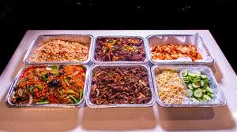

Catering
Bring the taste of Japan to your next event. Yoko's Kitchen provides catering services for private dinners, corporate events, birthdays, and special occasions. Our catering menu features a selection of seasonal dishes prepared with fresh, high-quality ingredients. We offer vegetarian, vegan, and traditional Japanese options, all beautifully presented and tailored to your needs. From elegant small bites to full-course meals, we create an authentic and memorable dining experience for you and your guests.